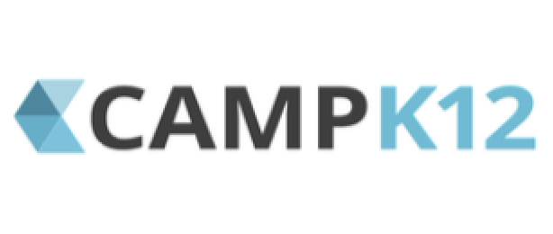

|
Research Interests
My interests broadly lie in the fields of natural language processing, machine learning, and computational linguistics.
Much of current research is focused on active learning, unsupervised learning, and dataless classification i.e. training machine learning models with little or no data. More recently, I have been working with latent variable and flow-based deep generative models within neural text-style transfer domain for context aware and controlled text generation for the task of conditional advertising slogan generation towards Dynamic Creative Optimization.
|

|
Iterative Seed Word Selection for Weakly-Supervised Text Classification with Bayesian Error Estimation
Jin Yiping,
Akshay Bhatia,
Dittaya Wanvarie
EACL 2021, (under review)
Weakly-supervised text classification aims to induce text classifiers from only a few user-provided seed words. Regardless of the underlying model, the quality of the seed words has a significant impact on the classification accuracy. The vast majority of previous work assumes high-quality seed words are given. However, the expert-annotated seed words are non-trivial to come up with. Furthermore, in the weakly-supervised learning setting, we do not have access to any labeled document, neither for training nor for validation. Therefore, there is no way to detect and eliminate bad seed words to improve classification accuracy. In this work, we remove the need for expert annotated seed words by firstly mining (noisy) candidate seed words associated with the category names. We then train interim models with individual candidate seed words in an iterative manner. Lastly, we use the Bayesian error estimation method to estimate the interim models’ error rate in an unsupervised manner. The keywords that yield the lowest estimated error rates are added to the final seed word set. A comprehensive evaluation of six binary classification tasks on four popular datasets demonstrates the effectiveness of the proposed method. It outperforms a baseline using only the category name as seed word and obtained comparable performance as a counterpart using expert-annotated seed words.
|
|
|
Generating Coherent and Diverse Slogans with Sequence-to-Sequence Transformer
Jin Yiping,
Akshay Bhatia,
Dittaya Wanvarie,
Phu T. V. Le
2021, (In Progress)
Previous work in slogan generation focused on generating novel slogans by utilizing templates mined from real slogans. While some such slogans can be catchy, they are often abstract and are not coherent with the company’s focus or style across their marketing communications. We propose a sequence-to- sequence transformer model to generate slogans from a brief company description. A naïve sequence- to-sequence model fine-tuned for slogan generation is prone to introduce false information, especially unrelated company names appearing in the training data. We use delexilization to address this problem and improve the quality of the generated slogans by a large margin. Furthermore, we apply two simple but effective approaches to generate more diverse slogans. Firstly, we train a slogan generation model conditioned on the industry. During inference time, by changing the industry, we can obtain different “flavours” of slogans. Secondly, instead of using only the company description as the input sequence, we sample random paragraphs from the company’s website. Surprisingly, the model is able to generate meaningful slogans even if the input sequence does not resemble a company description. We validate the effectiveness of the proposed method with both quantitative evaluation and qualitative evaluation. Our best model achieved a Rouge-1/-2/-L F1 score of 44.91/19.88/38.86.
|

|
Sentinel: In-House Active Learning Platform
Akshay Bhatia,
Jin Yiping,
Vishakha Kadam,
Tho Nguyen
2020, (In Progress)
Modern applications require large datasets to train a classifier to achieve respectable results. But in practice, this incurs a significant cost since humans have to manually label data points. Active Learning(AL) is useful for reducing the amount of supervision needed for performing a task, by having the model select which data points should be labeled. We present Sentinel, an active learning platform capable of building text classifiers as well as annotating large amounts of text data. Our platform lets the user interact with the system and annotate and build text classifiers up to their requirements, thus requiring less human effort and time. More importantly, we implement a novel training strategy combining active learning with tri-training that performs better than random, uncertainty(entropy), and expected gradient length(EGL) sampling on 2 benchmark datasets. Through a series of experiments, we evaluate our platform, Sentinel, on various text classification benchmark datasets and a corpus of Real-Time Bidding (RTB) requests essential to the task of Brand Safety at Knorex. Our results demonstrate the effectiveness of our framework and provides for a computationally efficient sampling method.
|

|
Knorex
, Pune, India
Research Scientist - NLP
April 2019 - Present
Working on applied research problems in automated contextual advertising for Knorex KAIROS and Knorex XPO.
|
|

|
CampK12
, Gurugram, India
Machine Learning Developer Intern
June 2018 - December 2018
Worked on LingoLens, a K12 language learning mobile app. Contributed towards building a question tagger system for peer to peer question answering forum for the CampK12’s Generation Blockchain 2018 Summit. Co-designed and co-instructed CampK12's first Machine Learning & AI course.
|
|
|
Spikeway Technologies
, Noida, India
Machine Learning Intern
May 2017 - July 2017
Part of the team responsible for building the book genre classification and the news article authorship plagiarism checker.
|

|
Road Network Extraction using Satellite Imagery
Submission for MoveHack Global Mobility Hackathon 2018
Github /
Demo video
The project involved training and deploying a road segmentation and extraction system using high-resolution satellite imagery for reliable and low-cost terrain monitoring and infrastructure quality assessment.
Optimized the trained model for real-time applications with final inference speed of only 0.28 seconds on Tesla K80 GPU achieving a mask accuracy of 95% and a dice score of 65% on the validation set.
|

|
LingoLens
@CampK12 with Anshul Bhagi
Slides /
API Docs
A multilingual language learning app for K12 students providing translations and transliterations for indoor and outdoor objects in over 20 languages.
We implemented a real-time object detection and on-device scene classification model Trained a custom YOLO model to detect ∼150 objects with an mAP of 67% improving the on-device detection and classification inference speeds by 19% with only 6% performance degradation compared to SoTA methods such as RetinaNet and SSD.
|

|
Book Genre Classification
@Spikeway Technologies with Praveen Kumar
Github /
Demo
In this project, I led a 3 member team in the development of a ML-based system to classify books into their genres, based entirely on its title, without prior knowledge or context of author and origin.
I was responsible for the architecture, training, and deployment of the model. We improved the TFIDF and LR baselines by training a LSTM using pre-trained word2vec embeddings.
|

|
Computer Vision Projects
Just for Fun
Github
Open-source implementations for various computer vision tasks such as Template matching, Object Tracking, Face Swapper, Live Sketch, etc, using OpenCV.
60+ stars, 60+ forks.
|

|
TravelCamp
Submission for IMAD 2016
Github /
Demo
This project involved developing a social blog/profile web app where users can interact with each other. Other features including personal feed, posts, comments, signing, and logging in.
The web app follows RESTful approach for CRUD operations and was deployed using Heroku. Backend frameworks used: NodeJS, ExpressJS, MongoDB, PassportJS
|
|
{kind=link}